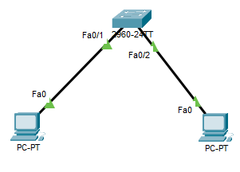
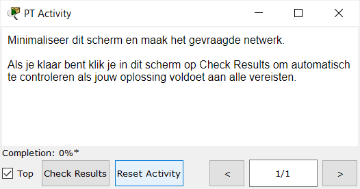

In deze oefening krijg je een netwerk dat niet werkt, en zoek je zelf uit waarom.
Download het startbestand en open het in Cisco Packet Tracer.

De twee computers kunnen elkaar niet pingen: een pdu versturen geeft de status failed. De switch resetten naar de standaardinstellingen lost het deze keer niet op.
Zoek de oorzaak bij de tweede pc, rechts, en pas aan wat er niet klopt.
Ben je klaar, klik dan op Check Results in het venster van de oefening.
